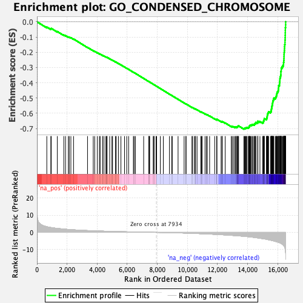

| | | Dataset | DE_genes2 |
| Phenotype | NoPhenotypeAvailable |
| Upregulated in class | na_neg |
| GeneSet | GO_CONDENSED_CHROMOSOME |
| Enrichment Score (ES) | -0.70427907 |
| Normalized Enrichment Score (NES) | -2.3619027 |
| Nominal p-value | 0.0 |
| FDR q-value | 0.0 |
| FWER p-Value | 0.0 |
Table: GSEA Results Summary

Fig 1: Enrichment plot: GO_CONDENSED_CHROMOSOME
Profile of the Running ES Score & Positions of GeneSet Members on the Rank Ordered List
| PROBE | GENE SYMBOL | GENE_TITLE | RANK IN GENE LIST | RANK METRIC SCORE | RUNNING ES | CORE ENRICHMENT | | 1 | CHMP1A | | | 654 | 3.296 | -0.0346 | No |
| 2 | MAD1L1 | | | 922 | 2.842 | -0.0462 | No |
| 3 | SYCE3 | | | 952 | 2.793 | -0.0434 | No |
| 4 | DCTN5 | | | 1352 | 2.316 | -0.0640 | No |
| 5 | SYCE1L | | | 1786 | 1.927 | -0.0873 | No |
| 6 | RANGAP1 | | | 1901 | 1.838 | -0.0912 | No |
| 7 | RAD9A | | | 2085 | 1.693 | -0.0996 | No |
| 8 | TP53BP1 | | | 2146 | 1.651 | -0.1006 | No |
| 9 | CENPT | | | 2253 | 1.586 | -0.1044 | No |
| 10 | SUN2 | | | 2433 | 1.473 | -0.1130 | No |
| 11 | DDX11 | | | 3360 | 1.054 | -0.1679 | No |
| 12 | PHF2 | | | 3740 | 0.916 | -0.1896 | No |
| 13 | RGS12 | | | 3836 | 0.884 | -0.1939 | No |
| 14 | NDE1 | | | 4008 | 0.835 | -0.2030 | No |
| 15 | CLASP1 | | | 4148 | 0.794 | -0.2102 | No |
| 16 | DCTN3 | | | 4199 | 0.779 | -0.2120 | No |
| 17 | RSPH1 | | | 4377 | 0.727 | -0.2216 | No |
| 18 | RASSF2 | | | 4390 | 0.722 | -0.2211 | No |
| 19 | RNF212 | | | 4522 | 0.687 | -0.2280 | No |
| 20 | MEAF6 | | | 4612 | 0.659 | -0.2324 | No |
| 21 | P3H4 | | | 4647 | 0.650 | -0.2334 | No |
| 22 | KIFAP3 | | | 4657 | 0.648 | -0.2329 | No |
| 23 | HSF1 | | | 4834 | 0.610 | -0.2426 | No |
| 24 | LRWD1 | | | 4983 | 0.574 | -0.2507 | No |
| 25 | L3MBTL1 | | | 5022 | 0.565 | -0.2521 | No |
| 26 | TOP3B | | | 5214 | 0.515 | -0.2630 | No |
| 27 | AURKC | | | 5270 | 0.499 | -0.2655 | No |
| 28 | SYCE2 | | | 5414 | 0.467 | -0.2735 | No |
| 29 | PMF1 | | | 5580 | 0.431 | -0.2829 | No |
| 30 | NDEL1 | | | 5819 | 0.381 | -0.2968 | No |
| 31 | ZNF276 | | | 5964 | 0.353 | -0.3050 | No |
| 32 | STAG3L4 | | | 6092 | 0.327 | -0.3122 | No |
| 33 | DYNC1I1 | | | 6407 | 0.262 | -0.3310 | No |
| 34 | SETMAR | | | 6461 | 0.252 | -0.3338 | No |
| 35 | CEBPB | | | 6545 | 0.234 | -0.3385 | No |
| 36 | STAG3L2 | | | 7090 | 0.137 | -0.3716 | No |
| 37 | CENPW | | | 7436 | 0.075 | -0.3926 | No |
| 38 | RNF212B | | | 7440 | 0.075 | -0.3926 | No |
| 39 | ADD3 | | | 7464 | 0.072 | -0.3939 | No |
| 40 | NCAPH2 | | | 7491 | 0.067 | -0.3954 | No |
| 41 | STAG3 | | | 7725 | 0.029 | -0.4096 | No |
| 42 | REC8 | | | 7773 | 0.021 | -0.4124 | No |
| 43 | HSPA2 | | | 7779 | 0.021 | -0.4127 | No |
| 44 | UBE2I | | | 7911 | 0.003 | -0.4207 | No |
| 45 | TUBG1 | | | 7955 | -0.003 | -0.4234 | No |
| 46 | CENPB | | | 8197 | -0.041 | -0.4380 | No |
| 47 | RAD9B | | | 8397 | -0.076 | -0.4501 | No |
| 48 | CENPV | | | 8805 | -0.152 | -0.4747 | No |
| 49 | ZNF207 | | | 8957 | -0.183 | -0.4837 | No |
| 50 | SYN1 | | | 8990 | -0.191 | -0.4853 | No |
| 51 | SS18L1 | | | 9378 | -0.284 | -0.5085 | No |
| 52 | SYCP2 | | | 9779 | -0.393 | -0.5323 | No |
| 53 | SYCP3 | | | 9898 | -0.427 | -0.5388 | No |
| 54 | STAG3L1 | | | 9908 | -0.431 | -0.5387 | No |
| 55 | CSNK1A1 | | | 10302 | -0.555 | -0.5618 | No |
| 56 | C14orf39 | | | 10332 | -0.562 | -0.5627 | No |
| 57 | BRD4 | | | 10448 | -0.602 | -0.5687 | No |
| 58 | NSMCE1 | | | 10519 | -0.632 | -0.5719 | No |
| 59 | NUP85 | | | 10541 | -0.640 | -0.5722 | No |
| 60 | NSMCE2 | | | 10641 | -0.675 | -0.5771 | No |
| 61 | CDK2 | | | 10886 | -0.760 | -0.5908 | No |
| 62 | CCNB1IP1 | | | 10929 | -0.775 | -0.5921 | No |
| 63 | NOL6 | | | 10979 | -0.794 | -0.5938 | No |
| 64 | RAD1 | | | 11169 | -0.868 | -0.6039 | No |
| 65 | CFDP1 | | | 11263 | -0.909 | -0.6081 | No |
| 66 | ANAPC16 | | | 11318 | -0.934 | -0.6098 | No |
| 67 | PES1 | | | 11474 | -0.997 | -0.6177 | No |
| 68 | TTN | | | 11813 | -1.138 | -0.6365 | No |
| 69 | BANF1 | | | 11943 | -1.194 | -0.6424 | No |
| 70 | PINX1 | | | 11950 | -1.196 | -0.6408 | No |
| 71 | DYNC1LI1 | | | 11956 | -1.198 | -0.6391 | No |
| 72 | DCTN6 | | | 12237 | -1.343 | -0.6540 | No |
| 73 | HUS1 | | | 12299 | -1.374 | -0.6555 | No |
| 74 | RCC1 | | | 12313 | -1.379 | -0.6540 | No |
| 75 | KANSL1 | | | 12510 | -1.477 | -0.6636 | No |
| 76 | NSMCE4A | | | 12912 | -1.723 | -0.6853 | No |
| 77 | CTCF | | | 12974 | -1.752 | -0.6861 | No |
| 78 | NSL1 | | | 13055 | -1.802 | -0.6880 | No |
| 79 | CENPM | | | 13147 | -1.858 | -0.6905 | No |
| 80 | BOD1 | | | 13214 | -1.899 | -0.6915 | No |
| 81 | SUV39H1 | | | 13225 | -1.906 | -0.6889 | No |
| 82 | DYNLT3 | | | 13291 | -1.949 | -0.6897 | No |
| 83 | SMC1A | | | 13325 | -1.971 | -0.6884 | No |
| 84 | SYCP2L | | | 13346 | -1.986 | -0.6864 | No |
| 85 | CENPO | | | 13365 | -2.007 | -0.6842 | No |
| 86 | CDT1 | | | 13400 | -2.026 | -0.6829 | No |
| 87 | MLH1 | | | 13750 | -2.282 | -0.7005 | Yes |
| 88 | NCAPD2 | | | 13788 | -2.321 | -0.6990 | Yes |
| 89 | CKAP5 | | | 13831 | -2.355 | -0.6976 | Yes |
| 90 | AKAP8 | | | 13879 | -2.396 | -0.6966 | Yes |
| 91 | DSN1 | | | 13907 | -2.424 | -0.6942 | Yes |
| 92 | INCENP | | | 13962 | -2.468 | -0.6934 | Yes |
| 93 | NEK2 | | | 14051 | -2.552 | -0.6946 | Yes |
| 94 | NUP37 | | | 14072 | -2.573 | -0.6916 | Yes |
| 95 | CLASP2 | | | 14107 | -2.602 | -0.6894 | Yes |
| 96 | PPP1CC | | | 14114 | -2.608 | -0.6855 | Yes |
| 97 | NCAPD3 | | | 14122 | -2.615 | -0.6816 | Yes |
| 98 | NUP43 | | | 14154 | -2.649 | -0.6791 | Yes |
| 99 | DMC1 | | | 14196 | -2.689 | -0.6772 | Yes |
| 100 | KNSTRN | | | 14258 | -2.748 | -0.6764 | Yes |
| 101 | RRS1 | | | 14305 | -2.785 | -0.6746 | Yes |
| 102 | NUP133 | | | 14373 | -2.856 | -0.6740 | Yes |
| 103 | LIG4 | | | 14451 | -2.938 | -0.6739 | Yes |
| 104 | EID3 | | | 14459 | -2.945 | -0.6694 | Yes |
| 105 | AGO3 | | | 14492 | -2.982 | -0.6665 | Yes |
| 106 | CENPU | | | 14542 | -3.039 | -0.6645 | Yes |
| 107 | BUB3 | | | 14549 | -3.043 | -0.6598 | Yes |
| 108 | MIS12 | | | 14669 | -3.210 | -0.6618 | Yes |
| 109 | ZW10 | | | 14679 | -3.216 | -0.6570 | Yes |
| 110 | FBXO28 | | | 14681 | -3.219 | -0.6518 | Yes |
| 111 | HMGB1 | | | 14818 | -3.383 | -0.6545 | Yes |
| 112 | NUP107 | | | 15003 | -3.655 | -0.6598 | Yes |
| 113 | BAZ1B | | | 15050 | -3.719 | -0.6564 | Yes |
| 114 | HNRNPU | | | 15058 | -3.735 | -0.6507 | Yes |
| 115 | SPC24 | | | 15084 | -3.765 | -0.6460 | Yes |
| 116 | CENPN | | | 15099 | -3.785 | -0.6406 | Yes |
| 117 | ZWINT | | | 15107 | -3.798 | -0.6348 | Yes |
| 118 | ITGB3BP | | | 15248 | -4.001 | -0.6368 | Yes |
| 119 | SEH1L | | | 15275 | -4.073 | -0.6317 | Yes |
| 120 | RAD51 | | | 15283 | -4.088 | -0.6253 | Yes |
| 121 | HORMAD1 | | | 15302 | -4.116 | -0.6197 | Yes |
| 122 | NIFK | | | 15308 | -4.126 | -0.6132 | Yes |
| 123 | CHAMP1 | | | 15322 | -4.154 | -0.6071 | Yes |
| 124 | SPAG5 | | | 15339 | -4.181 | -0.6012 | Yes |
| 125 | BOD1L1 | | | 15365 | -4.231 | -0.5957 | Yes |
| 126 | CDCA5 | | | 15393 | -4.273 | -0.5903 | Yes |
| 127 | CBX3 | | | 15520 | -4.527 | -0.5906 | Yes |
| 128 | SKA2 | | | 15559 | -4.611 | -0.5853 | Yes |
| 129 | MLH3 | | | 15568 | -4.628 | -0.5782 | Yes |
| 130 | ZWILCH | | | 15582 | -4.659 | -0.5713 | Yes |
| 131 | ATRX | | | 15599 | -4.719 | -0.5645 | Yes |
| 132 | AURKA | | | 15607 | -4.737 | -0.5571 | Yes |
| 133 | PLK1 | | | 15623 | -4.763 | -0.5502 | Yes |
| 134 | CCNB1 | | | 15643 | -4.796 | -0.5434 | Yes |
| 135 | CENPC | | | 15651 | -4.807 | -0.5359 | Yes |
| 136 | KNTC1 | | | 15665 | -4.846 | -0.5287 | Yes |
| 137 | FANCD2 | | | 15673 | -4.860 | -0.5211 | Yes |
| 138 | NUDCD2 | | | 15699 | -4.910 | -0.5146 | Yes |
| 139 | BLM | | | 15728 | -4.957 | -0.5081 | Yes |
| 140 | BIRC5 | | | 15741 | -4.998 | -0.5006 | Yes |
| 141 | NCAPH | | | 15843 | -5.247 | -0.4981 | Yes |
| 142 | TOPBP1 | | | 15880 | -5.334 | -0.4915 | Yes |
| 143 | SMARCA5 | | | 15909 | -5.412 | -0.4843 | Yes |
| 144 | RAD21 | | | 15930 | -5.459 | -0.4765 | Yes |
| 145 | AHCTF1 | | | 15945 | -5.493 | -0.4683 | Yes |
| 146 | CHEK1 | | | 15965 | -5.552 | -0.4603 | Yes |
| 147 | SMC5 | | | 16016 | -5.725 | -0.4540 | Yes |
| 148 | MAD2L1 | | | 16043 | -5.805 | -0.4460 | Yes |
| 149 | GPATCH11 | | | 16050 | -5.815 | -0.4368 | Yes |
| 150 | ORC2 | | | 16058 | -5.843 | -0.4275 | Yes |
| 151 | KIF2C | | | 16061 | -5.848 | -0.4180 | Yes |
| 152 | SKA3 | | | 16116 | -5.989 | -0.4115 | Yes |
| 153 | AURKB | | | 16120 | -6.007 | -0.4017 | Yes |
| 154 | SPC25 | | | 16131 | -6.050 | -0.3924 | Yes |
| 155 | BUB1 | | | 16142 | -6.084 | -0.3829 | Yes |
| 156 | SKA1 | | | 16146 | -6.104 | -0.3731 | Yes |
| 157 | ERCC6L | | | 16159 | -6.148 | -0.3637 | Yes |
| 158 | NCAPG2 | | | 16188 | -6.289 | -0.3550 | Yes |
| 159 | LRPPRC | | | 16207 | -6.354 | -0.3456 | Yes |
| 160 | HJURP | | | 16210 | -6.380 | -0.3352 | Yes |
| 161 | CENPH | | | 16211 | -6.387 | -0.3247 | Yes |
| 162 | SPDL1 | | | 16232 | -6.486 | -0.3152 | Yes |
| 163 | MIS18BP1 | | | 16234 | -6.494 | -0.3046 | Yes |
| 164 | RIF1 | | | 16279 | -6.762 | -0.2961 | Yes |
| 165 | BUB1B | | | 16335 | -7.102 | -0.2878 | Yes |
| 166 | NUF2 | | | 16382 | -7.475 | -0.2783 | Yes |
| 167 | PHF6 | | | 16388 | -7.593 | -0.2660 | Yes |
| 168 | RAD50 | | | 16404 | -7.792 | -0.2541 | Yes |
| 169 | BRCA1 | | | 16413 | -7.892 | -0.2416 | Yes |
| 170 | STAG2 | | | 16417 | -7.973 | -0.2286 | Yes |
| 171 | SMC4 | | | 16421 | -7.981 | -0.2157 | Yes |
| 172 | STAG1 | | | 16427 | -8.038 | -0.2027 | Yes |
| 173 | CENPA | | | 16438 | -8.139 | -0.1899 | Yes |
| 174 | SMC6 | | | 16450 | -8.331 | -0.1768 | Yes |
| 175 | SMC3 | | | 16453 | -8.381 | -0.1631 | Yes |
| 176 | SMC2 | | | 16464 | -8.568 | -0.1496 | Yes |
| 177 | MKI67 | | | 16483 | -9.193 | -0.1356 | Yes |
| 178 | CENPK | | | 16485 | -9.298 | -0.1203 | Yes |
| 179 | BRCA2 | | | 16493 | -9.707 | -0.1047 | Yes |
| 180 | TOP2A | | | 16497 | -9.873 | -0.0886 | Yes |
| 181 | CENPE | | | 16501 | -10.010 | -0.0723 | Yes |
| 182 | NCAPG | | | 16504 | -10.079 | -0.0558 | Yes |
| 183 | CENPF | | | 16507 | -10.688 | -0.0383 | Yes |
| 184 | HMGB2 | | | 16525 | -11.801 | -0.0199 | Yes |
| 185 | NDC80 | | | 16527 | -12.233 | 0.0002 | Yes |
Table: GSEA details [plain text format]
Fig 2: GO_CONDENSED_CHROMOSOME: Random ES distribution
Gene set null distribution of ES for GO_CONDENSED_CHROMOSOME